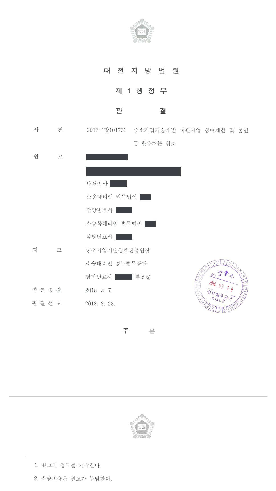

국가연구개발사업 과제 중복수행을 이유로 한 참여제한·출연금 환수처분 취소소송
대전지방법원 2017구합101736 · 담당변호사 부효준
판결문

사건의 요지
중소기업 기술개발사업 과제가 앞서 수행한 과제와 중복된다는 이유로 한 참여제한·정부출연금 환수처분에 관하여, 과제 중복이라는 처분사유의 존부와 신뢰보호원칙 위반 여부가 다투어진 사건입니다.
사건의 주요 내용
선박 설계·제조 등을 하는 원고 회사는 2013년도 창업성장기술개발사업(건강진단 연계형) 과제로 소형 전기보트용 전력관리제어시스템(PMS)과 전기추진시스템을 개발하는 과제(2013년 5월부터 12개월)를, 2014년도 같은 사업 과제로 화석연료 소형 레저선박을 이차전지 전기추진시스템으로 변환하는 과제(2014년 5월부터 12개월)를 각각 전문기관과 협약을 맺고 수행하였습니다.
전문기관은 2016년 8월 중복성검토위원회를 열어 2014년도 과제가 2013년도 과제와 중복된다고 판정하였고, 원고 회사의 이의신청은 2016년 9월 중복성 이의신청평가위원회에서 받아들여지지 않았습니다. 전문기관은 2017년 2월 전문위원회 심의를 거쳐 과제 중복 수행을 사유로 3년의 참여제한과 2014년도 과제 정부출연금 146,309,885원의 환수처분을 하였고, 원고 회사는 그 취소를 구하는 소송을 제기하였습니다. 부효준 변호사는 전문기관을 대리하였습니다.
원고의 주장
- 2014년도 과제는 2013년도 과제와 중복되지 않으므로 처분사유가 존재하지 않는다고 주장하였습니다. 2013년도 과제의 결과물은 육상용 전력관리제어시스템이고 2014년도 과제의 결과물은 그 시스템을 탑재한 전기추진 선박이어서 서로 다르다는 것입니다.
- 전문기관이 2014년도 과제를 지원대상으로 선정하여 협약을 체결하고 사업비를 출연하는 과정에서 여러 단계의 중복성 심사를 거쳤으므로 이는 공적인 견해표명이고, 원고 회사는 귀책사유 없이 이를 신뢰하여 과제를 수행하고 사업비를 지출하였으므로 처분은 신뢰보호원칙에 위반된다고 주장하였습니다.
부효준 변호사의 주장
- 관계 법령상 과제의 '중복'은 두 과제가 완전히 동일한 것을 뜻하지 않으며, 과제 공고에도 '신청기업에 기 지원된 내용과 유사한 경우'가 지원제외 대상으로 명시되어 있었다는 점을 들었습니다. 두 과제는 원고 회사가 스스로 작성한 사업계획서상 개발목표, 수행기관별 업무분장, 핵심 개발내용과 그림이 같거나 유사하여 선박 크기와 전지·모터 규격 정도만 다르다는 점도 밝혔습니다.
- 중복성 판정은 관련 기술분야 전문가들로 구성된 위원회가 만장일치로 한 것이므로 존중되어야 하고, 운영요령은 과제 선정 이후나 협약 체결 이후에도 중복 수행이 확인되면 선정취소·과제중단·협약해약을 할 수 있도록 정하고 있으며 협약서에도 운영요령 준수 의무가 있으므로, 선정·협약 사실만으로 중복성이 없다는 공적 견해표명이 있었다고 볼 수 없다고 주장하였습니다.
법원의 판단
법원은 두 과제의 중복 여부는 원고 회사가 작성한 사업계획서로 판정할 수밖에 없는데, 중복성 평가위원회와 이의신청 검토위원회가 모두 개발목표·유형의 차별성 부족과 수행기관별 업무분장, 핵심 개발내용·그림의 동일성을 지적하였고, 관련 분야 전문가들의 만장일치 판단은 객관적·합리적이지 않다고 볼 사정이 없는 한 존중되어야 한다고 보았습니다.
또한 '중복'의 사전적 의미와 공고 내용에 비추어 관계 법령상 '중복'은 두 과제의 완전한 동일성을 뜻하지 않고, 2013년도 과제의 결과물은 2014년도 과제를 수행하기 위한 중간과정에 해당한다고 보아, 중복 수행이 구 중소기업 기술혁신 촉진법 제31조 제1항 제6호와 같은 법 시행령 [별표 2]의 '중복 수행 등 부정한 방법을 사용하여 과제 수행기관으로 선정된 경우'에 해당한다고 판단하였습니다.
신뢰보호원칙에 관하여는 공적 견해표명 등 다섯 가지 요건을 요구하는 대법원 판례(2016. 12. 15. 선고 2013두8431 판결)를 전제로, 전문기관이 지원 시 중복 여부를 검토하고 원고 회사가 사업계획서에 2013년도 과제를 참여실적으로 적은 사실은 인정되지만, 운영요령이 선정·협약 이후에도 중복이 확인되면 선정취소·과제중단·협약해약을 할 수 있도록 정하고 협약서도 운영요령 준수를 요구하는 이상 중복성이 없다는 공적 견해표명이 있었다고 보기 어렵다고 하여 원고 회사의 청구를 모두 받아들이지 않았습니다.
'중복'의 사전상 의미는 거듭하거나 겹치는 것이라는 뜻인 점, 피고가 2013년 및 2014년 과제 공고에 '신청과제가 기 개발 되었거나, 이미 다른 기업이 지원받은 기술과 동일하거나 또는 신청기업에 기 지원된 내용과 유사한 경우' 지원제외대상에 해당된다는 점을 밝히고 있는 점 등을 감안하여 보면, 관계 법령상의 '중복'이라는 용어가 두 과제의 완전한 동일성을 의미하는 것이라고 볼 수 없다.
대전지방법원 2017구합101736 판결 이유 '2. 다. 1) 처분사유의 존부 나) (3)'
일반적으로 행정상의 법률관계에서 행정청의 행위에 대하여 신뢰보호의 원칙이 적용되기 위해서는, 첫째 행정청이 개인에 대하여 신뢰의 대상이 되는 공적인 견해표명을 하여야 하고, 둘째 행정청의 견해표명이 정당하다고 신뢰한 데에 대하여 그 개인에게 귀책사유가 없어야 하며, 셋째 그 개인이 그 견해표명을 신뢰하고 이에 상응하는 어떠한 행위를 하였어야 하고, 넷째 행정청이 위 견해표명에 반하는 처분을 함으로써 그 견해표명을 신뢰한 개인의 이익이 침해되는 결과가 초래되어야 하며, 다섯째 위 견해표명에 따른 행정처분을 할 경우 이로 인하여 공익 또는 제3자의 정당한 이익을 현저히 해할 우려가 있는 경우가 아니어야 한다(대법원 2016. 12. 15. 선고 2013두8431 판결 등 참조).
대전지방법원 2017구합101736 판결 이유 '2. 다. 2) 신뢰보호의 원칙 위반 여부 (가)'
※ 판결 이유 가운데 이 사건의 판단 기준이 된 부분을 그대로 옮긴 것으로, 당사자 이름 등은 가렸습니다.
이 사건이 보여 주는 것
앞선 과제와 내용이 겹치는 과제로 다시 지원을 받으면 '중복 수행 등 부정한 방법으로 과제 수행기관으로 선정된 경우'로서 참여제한과 출연금 전액 환수 사유가 됩니다. 이 판결은 '중복'이 두 과제의 완전한 동일성을 뜻하지 않고, 사업계획서의 개발목표·업무분장·개발내용이 같거나 유사하면 선박 크기나 부품 규격이 달라도 중복으로 평가될 수 있다는 점을 보여 줍니다.
또한 선정평가와 협약 체결 과정에서 중복성 검토를 거쳤다는 사정만으로는 '중복이 아니다'라는 공적 견해표명이 있었다고 인정되지 않습니다. 운영요령이 선정·협약 이후에도 중복 확인 시 제재할 수 있도록 정하고 있기 때문입니다. 연속 과제를 신청하는 기업은 앞선 과제와의 차별성을 사업계획서에 분명히 적고, 앞선 과제의 결과물이 새 과제의 중간 단계로 보이지 않도록 구성할 필요가 있습니다.
관련 법령구 중소기업 기술혁신 촉진법 제7조, 제29조, 제31조 제1항 제6호, 제32조 · 구 중소기업 기술혁신 촉진법 시행령 제19조 제1항, 제20조 [별표 2]
관련 단어참여제한출연금 환수과제 중복수행중복성 검토창업성장기술개발사업신뢰보호원칙공적 견해표명연구부정행위전기추진시스템전력관리제어시스템중소기업기술혁신 촉진법 제31조처분 적법
이 사건의 소개 글은 인스타그램(@lawyer.boo)에도 있습니다.
비슷한 처분을 받으셨다면
국가연구개발 제재처분은 사전통지를 받은 날부터 20일 이내에 재검토 요청 의견을 내고, 처분이 있음을 안 날부터 90일 이내에 취소소송을 제기해야 합니다. 처분서나 사전통지서를 받은 날짜부터 확인해 드립니다.